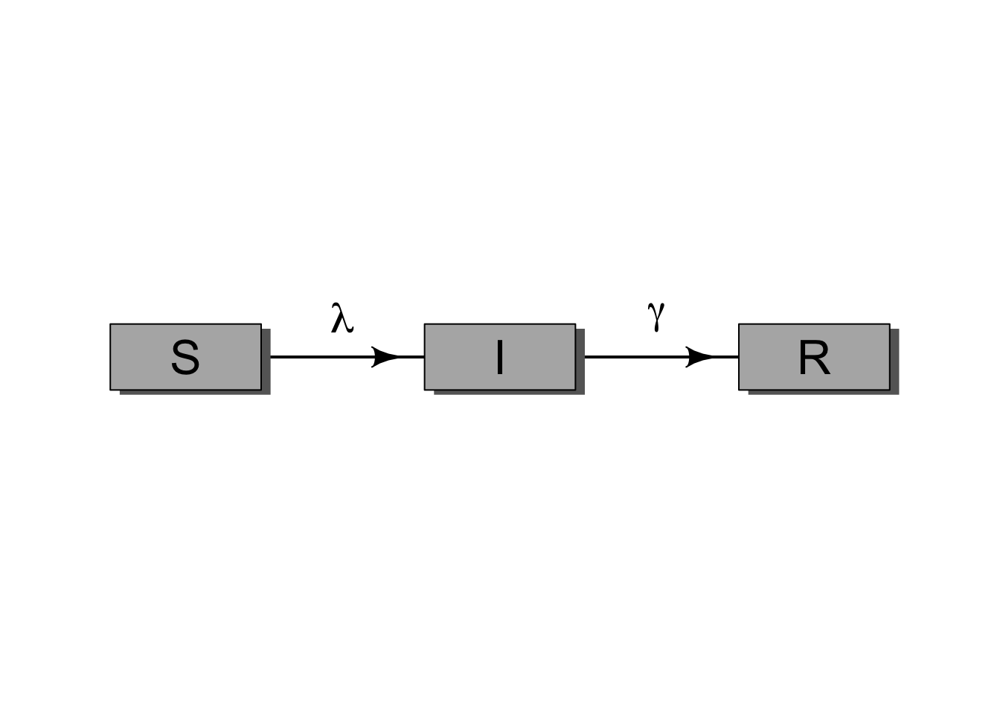
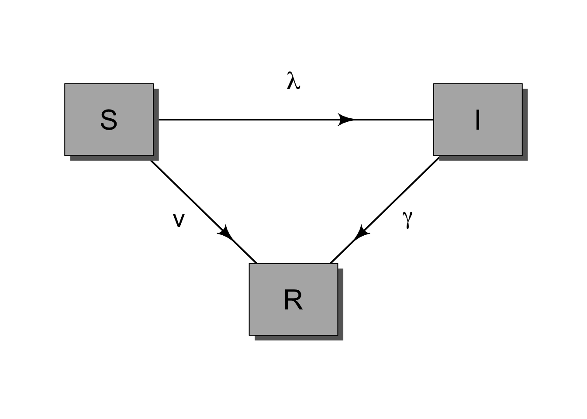

5 Compartmental Diagram Interactive Session
![]()
In this session, you will start with a simple SIR model diagram and modify it to represent an intervention or transmission process that is interesting to your group. The goal is not to make the most complicated model possible. Instead, the goal is to make each modeling choice explicit: what compartments are needed, what flows connect them, and what assumptions those flows imply.
5.1 Learning goals
By the end of this session, you should be able to:
- understand how to translate a public-health intervention into a compartment model structure;
- identify the states, flows, and parameters in that structure;
- explain which assumptions are introduced by adding or removing arrows; and
- describe the expected qualitative effect of the intervention on epidemic dynamics.
5.2 Setup
We will use the diagram package to draw box-and-arrow compartment diagrams, as in Section 6.6.1.2, and the purrr package to create uniform compartment boxes.
5.3 Starting point: a simple SIR diagram
The basic SIR model has three compartments:
- \(S\): susceptible individuals;
- \(I\): infectious individuals; and
- \(R\): recovered or removed individuals.

For the standard SIR model, infection moves people from \(S\) to \(I\) at rate \(\lambda\), and recovery or removal moves people from \(I\) to \(R\) at rate \(\gamma\).
5.4 Group activity
Choose one intervention or modeling feature that your group wants to represent. Then change the SIR diagram to include it.
Examples include:
- vaccination;
- isolation or quarantine;
- masking or behavior change;
- waning immunity;
- births and deaths;
- treatment;
- age groups or other risk groups; or
- any intervention relevant to your own research area.
For your modified model, prepare a short explanation of:
- which compartments you added or removed;
- which arrows you added or removed;
- what parameter or rate each new arrow represents;
- what assumptions the new structure makes; and
- what qualitative effect you expect the intervention to have on the epidemic curve.
5.5 Example: adding vaccination
One simple way to represent vaccination is to add a flow from \(S\) to \(R\). This assumes vaccination gives protection similar to recovery or removal. That is a strong assumption, but it is a useful starting point.

In this example, \(v\) is the vaccination rate. Before writing equations, ask what this diagram assumes. For example, does vaccination work immediately? Does everyone have the same access to vaccination? Is vaccine protection perfect? Does protection wane?
5.6 Template for your diagram
You can copy and modify this code chunk to make your own diagram. Add compartments to elpos, add arrows to fromto, and label any new rates.
Code
# Define the locations of each compartment.
# Each row is one compartment, and the two numbers give its x- and
# y-position before scaling.
elpos <- rbind(
S = c(1, 1),
I = c(2, 1),
R = c(3, 1)
)
# Rescale the compartment positions so they fit inside the plotting area.
elpos[, 1] <- (2 * elpos[, 1] - 1) / 6
elpos[, 2] <- 0.5
# Define the arrows between compartments.
# The numbers refer to row positions in elpos, so SI = c(1, 2) draws an
# arrow from the first row, S, to the second row, I.
fromto <- rbind(
SI = c(1, 2),
IR = c(2, 3)
)
# Set small plot margins and open a blank plotting area for the diagram.
op <- par(mar = c(1, 1, 1, 1))
diagram::openplotmat(asp = 0.35)
# Draw one arrow for each row in fromto.
for (i in seq_len(nrow(fromto))) {
diagram::straightarrow(
to = elpos[fromto[i, 2], ],
from = elpos[fromto[i, 1], ],
lwd = 2,
arr.pos = 0.65,
arr.length = 0.5
)
}
# Draw a labeled box for each compartment.
purrr::walk(
rownames(elpos),
.f = function(.x) {
diagram::textrect(
elpos[.x, ],
0.08,
0.10,
lab = .x,
box.col = gray(0.7),
shadow.col = gray(0.4),
shadow.size = 0.01,
cex = 2
)
}
)
# Label the arrows with the rates that move individuals between states.
# Adjust the x- and y-positions if you add new compartments or arrows.
text(mean(elpos[c("S", "I"), 1]), 0.62, expression(lambda), cex = 1.8)
text(mean(elpos[c("I", "R"), 1]), 0.62, expression(gamma), cex = 1.8)
# Restore the previous plotting settings.
par(op)5.7 Deliverable
Each group should be ready to share:
- one modified box-and-arrow diagram;
- a list of the model states;
- a list of the model flows and parameters;
- one or two key assumptions implied by the diagram; and
- one prediction for how the intervention changes the epidemic trajectory.